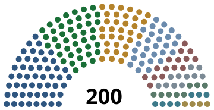

Register › Assembly › Projection
The first Assembly, projected
Two hundred seats, due to be filled on or before 7 July 2027 under Article 330(2)
Projected composition

HSP 51E&J 43S&P 33DS 28NT 15MFD 11HF 8DA 7SD 4
| List | 2025 | Projected | Change | Seats of 200 | Of 100 |
|---|---|---|---|---|---|
| Humanist Socialist Party HSP | 23.8% | 25.4% | +1.6 | 51 | 24 |
| Environment and Justice E&J | 21.6% | 21.2% | -0.4 | 43 | 22 |
| Shelter and Provision S&P | 17.9% | 16.6% | -1.3 | 33 | 18 |
| Democratic Socialists DS | 14.7% | 14.0% | -0.7 | 28 | 15 |
| National Traditionalists NT | 6.2% | 7.2% | +1.0 | 15 | 6 |
| Movement for Democracy MFD | 5.1% | 5.4% | +0.3 | 11 | 5 |
| Highlands Federation HF | 4.0% | 4.1% | +0.1 | 8 | 4 |
| Docklands Alliance DA | 3.2% | 3.5% | +0.3 | 7 | 3 |
| Social Democrats SD | 2.9% | 2.2% | -0.7 | 4 | 3 |
| Lists winning no seat | 0.6% | 0.4% | -0.2 | 0 | 0 |
| Total | 100% | 100% | 200 | 100 |
Effects of the electoral method
- Proportionality is national
The total a list obtains across the whole territory determines how many seats it wins, by the method of odd divisors. The result of the list in each district determines which of its candidates fill those seats. See Article 120(2) and (3).
- No legal threshold applies
A list that obtains the votes required for one seat wins that seat. On the shares projected here, the two hundredth seat is won at a quotient of about 0.25 per cent of the national vote. In a chamber of one hundred the corresponding figure is about 0.5 per cent. See Article 120(4).
- Every district returns at least five members
A chamber of two hundred requires about half the national share for one seat that a chamber of one hundred required, and the floor of five members keeps the least populous districts represented. Lists of small or regional support gain from both provisions. The Docklands Alliance rises from three seats to seven on an increase of three tenths of a percentage point. See Article 121(3).
What shapes the campaign
The subject of the campaign is whether the arrangements established by the Constitution can meet the needs of the population without recourse to a market in the means of production and without a concentration of power in one office.
Every institution of the Republic was constituted within one year of commencement on 7 July 2026, and none of them has yet completed a full planning cycle. Six subjects are argued about in every district.
Completing the implementation
Four things remain to be adopted: full power for the register of needs under Article 63, complete workplace and neighbourhood assemblies, economic councils at all three levels, and the first planning cycle, which Article 331(4) requires to open within two years of commencement. Each of these was established in outline during the first year.
None has operated for a full period, and the organic laws that fix their detail have not been passed.
Provision after the Long Winter
The housing waiting lists of 2024 and the shortages of the following winter produced Shelter and Provision as a party. The share it keeps depends on the quantity and the quality of what the catalogue of general provision now supplies, and on whether the allocation rules written during the shortage are applied in a year without one.
The condition of the railway
The railway of the Republic operates at average speeds comparable to those of the Romanian state railway, and the Republic has no line built for high speed. Journey times between Lindoma and the western sub-regions have lengthened over the last two decades through deferred renewal of track and structures.
Article 69 places mobility within the guarantee of essential provision, and Article 41(4) presumes unconstitutional any measure that reduces a level of provision already attained. Every list has been asked in the districts what quantity of renewal it will write into the first plan, and in what years.
Settlement with states outside the Bloc
The Republic has abolished currency internally in the three functions that make it capital, and Article 295(5) forbids it in every case to accept a common currency, a common monetary authority, or an obligation to maintain a rate, a reserve or a mechanism of conversion.
Exchange with the Bloc is settled in goods, labour, technique and knowledge through a single external account kept in physical units. Where a counterparty requires a unit of settlement, one is used to compute a balance, and it circulates nowhere and is held by no resident.
The dispute is about what the Republic does when a counterparty declines that arrangement. The Movement for Democracy proposes terms set by price, which Article 265 makes void. The other lists propose to widen the external account and to accept the loss of any counterparty that refuses it.
The Republic outside its borders
Three questions are argued: how far the Republic should reduce the range of goods it produces for itself and obtain them by exchange, what it should do about the condition of the population of Iosmein, and what position it should take on the states of eastern Europe, which lie to the west of the Republic. Article 296 makes the removal of barriers to human movement a standing objective.
Every list represented in the chamber supports Ukraine, and no list takes a position favourable to Russia.
 The settlement on persons and belief
The settlement on persons and belief
Article 46(3) gives every person decision over their own body, including the termination of a pregnancy. Article 38(2) forbids discrimination on the ground of sex or gender. Article 11 makes the Republic secular and forbids any public authority to adopt, fund, hinder or privilege a religion or a worldview.
The lists that support these provisions defend them by argument from medical evidence and from the record of the states that have restricted them.
Opposition comes from older cohorts within the Republic and from states outside it. No official church exists, and organised opposition of that kind does not exist in any sub-region.
Reasons for each change in share
- Humanist Socialist Party, from 23.8 to 25.4 per cent
The party recovers part of the loss of September 2025. Its district organisation is the largest of any list and it has held office in some combination since 1920. It has answered the charge of entrenchment with three measures set out on its page.
- Environment and Justice, from 21.6 to 21.2 per cent
The party holds close to its 2025 share. The phase-out schedule it argued for during the Deadlock is now in force, and the argument in the districts has moved from whether it was correct to what each stage costs.
- Shelter and Provision, from 17.9 to 16.6 per cent
The party loses part of the vote it gained during the shortages, since the waiting lists have shortened. It keeps the greater part of it because the quantities of Article 65 remain unspecified.
- Democratic Socialists, from 14.7 to 14.0 per cent
A movement within the margin of the estimate. The party gains from its opposition to Resolution 61 among voters who object to it, and loses a comparable share to the Humanist Socialist Party on the implementation timetable.
- National Traditionalists, from 6.2 to 7.2 per cent
The party gains about one point on the questions of Article 11, Article 38(2) and Article 46(3). It stays below eight per cent, which it has not exceeded since its foundation in 1947.
- Movement for Democracy, from 5.1 to 5.4 per cent, and Docklands Alliance, from 3.2 to 3.5 per cent
Both gain from the argument for reducing the range of goods the Republic produces for itself. The Docklands Alliance also gains from the railway question, the corridor from Lutoliluri being the route in the worst condition.
- Highlands Federation, from 4.0 to 4.1 per cent
The party holds its share and gains four seats from the size of the chamber alone. Its widened programme is recorded by 22 per cent of respondents outside its three sub-regions, which is too small a figure to move its national share at this election.
- Social Democrats, from 2.9 to 2.2 per cent
The party loses about seven tenths of a point to the Humanist Socialist Party and to the Movement for Democracy. Its positions on the six subjects of the campaign are each held by a larger list, and 41 per cent of respondents say they do not know enough about it to answer.
The effect of a majority in the chamber
A majority of the chamber is one hundred and one seats. On these figures the two largest lists reach ninety-four together and require a third. The four socialist and ecological lists reach one hundred and fifty-five.
A majority of that kind decides the passage of legislation and decides nothing else. Execution belongs to committees composed in the proportions of the Assembly itself under Articles 147 to 149, so every list holds places on every committee large enough to contain it, whatever combination of lists passes a law. The Republic elects no executive and forms no government.
How to read the figures
The shares are a projection and no more. They rest on the result of 21 September 2025, on an assessment of the conditions described above, and on the assumption that the nine lists then represented participate in the election again and that no new list wins a seat.
Seats follow from the shares by the method of odd divisors applied to the whole territory. Sub-regional totals are omitted, since under Article 120(3) they determine which candidates of a list are returned and leave the number of seats of each list unchanged.
The apportionment of the two hundred seats among the districts is published separately by the Boundary Division and appears on the chamber page. The lists that won no seat in 2025 are described on their own page.